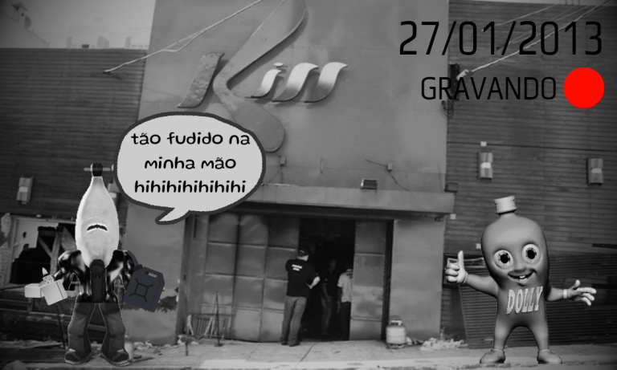

Suposta imagem do candidato Oinki tacando fogo na Boate Kiss ao lado de Dollynho vaza nessa manhã e a população Osamiana vai a comoção!
Nessa manhã, a população Osamiana acordou com uma grande surpresa, um grupo de hackers invadiram a conta pessoal do, então candidato a presidencia, Oinki. Ao invadirem ela, os hackers vazaram fotos comprometedoras de Oinki, em uma delas, é possivel observa-lo ao lado de Dollynho, enquanto ambos jogam gasolina e tacam fogo na Boate Kiss.

Suposta imagem vazada do candidato Oinki.
Ao saber do ocorrido, a população da República Democrata dos Osamas se dividiu em diversas opiniões, alguns começaram a fazer manifestações para retirar Oinki de candidato, outros ficaram a favor de Oinki, e uma parcela, não fez nada a respeito e nem opinião publica deu.
Ao tentar entrar em contato com Oinki e pedir uma entrevista para ele explicar esses ocorridos, o mesmo disse que ele já estava trabalhando em um video para isso, e que teremos um pronunciamento em breve.